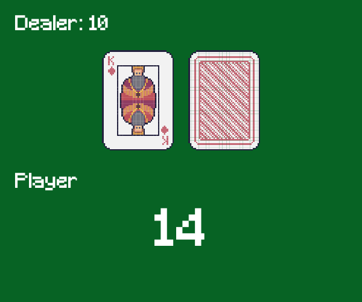

SAE : Agents intelligents en Machine Learning
Contexte du projet
Ce projet a été réalisé dans le cadre d’une SAE portant sur le développement d’agents intelligents en machine learning et en apprentissage par renforcement. L’objectif était de concevoir et d’implémenter différents agents capables d’interagir avec des environnements simulés afin d’apprendre des stratégies optimales par l’expérience.
Pour cela, nous avons utilisé la bibliothèque Gymnasium, qui fournit des environnements standards servant de terrains d’expérimentation pour les algorithmes d’apprentissage par renforcement.
Travail réalisé : Développement de plusieurs agents intelligents appliqués à différents environnements, avec comparaison de leurs performances et comportements.
Méthodes de travail
Le projet a été mené de manière progressive, en commençant par l’étude du fonctionnement des environnements Gymnasium et des principes fondamentaux de l’apprentissage par renforcement. Nous avons ensuite implémenté nous-mêmes les agents, sans utiliser de solutions toutes faites, afin de bien comprendre les mécanismes internes des algorithmes.
Nous avons développé et testé plusieurs agents sur différents environnements, notamment :
- Cliff Walking : apprentissage d’un chemin optimal en évitant des zones à forte pénalité.
- Frozen Lake : gestion de l’incertitude et des transitions probabilistes.
- CartPole : apprentissage du contrôle d’un système dynamique.
- Blackjack : prise de décision stratégique dans un environnement stochastique.
Les agents ont été implémentés à l’aide de différents algorithmes, principalement le Q-learning et le Monte Carlo Tree Search (MCTS), permettant de comparer des approches basées sur l’exploration et l’optimisation des récompenses.
Compétences travaillées
Ce projet m’a permis de développer et renforcer des compétences à la fois théoriques et pratiques en intelligence artificielle :
- Apprentissage par renforcement : compréhension des notions d’état, d’action, de récompense et de politique.
- Q-learning : implémentation d’un algorithme d’apprentissage basé sur la mise à jour d’une table Q et l’exploration/exploitation.
- MCTS : conception d’un agent utilisant la recherche arborescente et les simulations pour la prise de décision.
- Python : développement d’agents, gestion des environnements Gymnasium et analyse des résultats.
- Analyse et expérimentation : comparaison des performances des agents selon les environnements et les paramètres.
